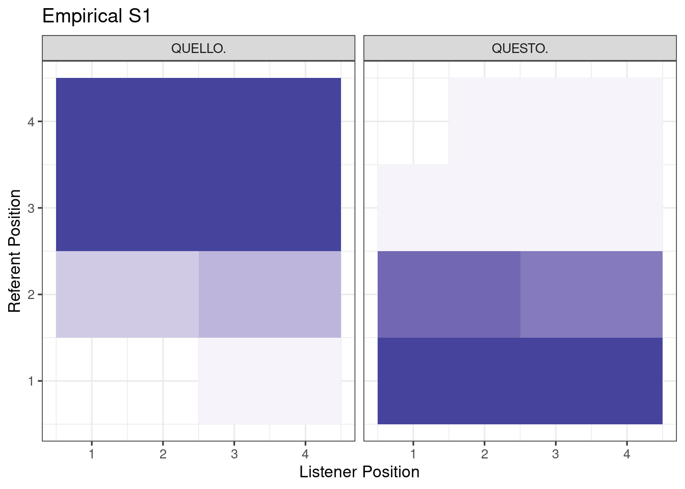

ita = read.csv('Data/EXP1_DISTANCE_ITALIAN.csv') %>%
filter(!is.na(Object_Position))
plt_data = ita %>%
group_by(Object_Position, Listener_Position, Raw_Response) %>%
summarise(N=n()) %>%
group_by(Object_Position, Listener_Position) %>%
mutate(p = N / sum(N)) %>%
ggplot(aes(Listener_Position, Object_Position)) +
facet_wrap(~Raw_Response) +
geom_tile(aes(fill=p)) +
scale_fill_steps2(limits=c(0, 1), n.breaks=10) +
ylab('Referent Position') +
xlab('Listener Position') +
ggtitle('Empirical S1') +
guides(fill='none') +
theme_bw(base_size = 12) `summarise()` has grouped output by 'Object_Position', 'Listener_Position'. You
can override using the `.groups` argument.plt_data
d_ita = ita %>%
rename(Trial=Item, referent=Object_Position, lpos=Listener_Position) %>%
mutate(spos = 1,
word = case_when(grepl('EST', Raw_Response) ~ 'este',
grepl('ELL', Raw_Response) ~ 'aquel')) %>%
select(Subject, Trial, spos, lpos, referent, word) %>%
group_by(spos, lpos, word, referent) %>%
summarise(y = n()) %>%
left_join(design) %>%
drop_na() %>%
group_by(Item, referent) %>%
mutate(N=sum(y)) %>%
ungroup()`summarise()` has grouped output by 'spos', 'lpos', 'word'. You can override
using the `.groups` argument.
Joining with `by = join_by(spos, lpos, word, referent)`